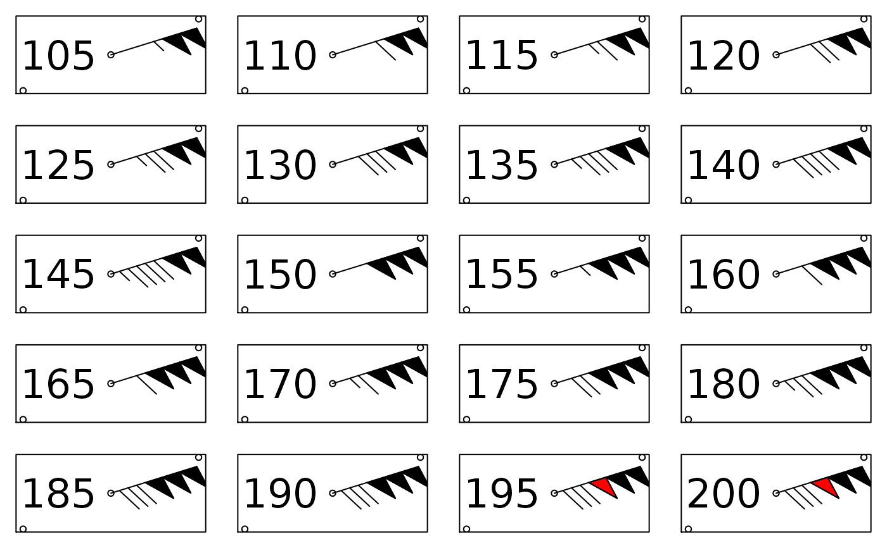

A function to plot a wind barb. This is a modified version of `station.symbol` function from the RadioSonde package. Currently wind barbs are supported up to 190 knots.
windbarbs(cx, cy, direction, speed = NA, cex = 1)
| cx | x coordinates on a plot |
|---|---|
| cy | y coordinates on a plot |
| direction | wind direction (0-360 degrees) |
| speed | wind speed in knots |
| cex | symbol size. Default 1 |
windbarbs(cx = 1, cy = 1, direction = 90, speed = 1, cex = 5)# multiplot par(mfrow=c(5,4), mar = c(1,1,1,1)) for (i in 19:38){ sc = 5 plot(0:2, xaxt = 'n', yaxt = 'n', type = "n", xlab = "", ylab = "") text(1.4,1, i*sc, cex = 1.5) windbarbs(cx = 2, cy = 1, direction = 60, speed = i*sc, cex = 3) }